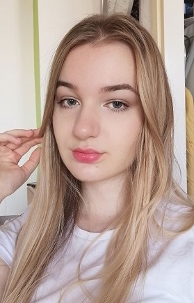

| Zovem se Nada Kolaković i rođena sam 28.02.2001. u Beogradu.
Završila sam Prvu ekonomsku školu u Beogradu. Još u srednjoj školi sam
znala da ekonomija nije nauka kojom bih želela da se bavim, ali ljubav
prema marketingu je prevagnula i 2019. upisujem Ekonomski fakultet. Međutim, u toku
studija se odlučujem da upišem smer Poslovna informatika. U slobodno vreme pišem i vodim stranicu na Instagramu, na kojoj objavljujem neke od svojih tekstova. Neretko čitam i crtam, editujem videe i slike. Koristim svaku priliku koju imam da putujem i jedna od najvećih želja mi je da obiđem ceo svet. Veliku strast imam prema astrologiji. Volim da provodim vreme sa sebi dragim ljudima i punim se pozitivnom energijom kroz meditaciju i muziku. |
 |